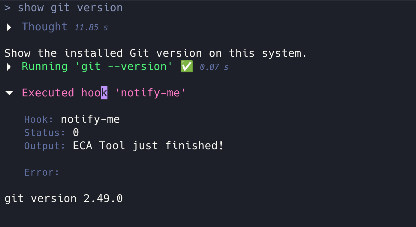

Hooks#

Hooks are shell actions that run before or after specific events. Use them to send notifications, inject context, modify inputs, or block tool calls.
This page first explains the mechanics shared by all hooks, then provides a per-hook reference so you can quickly find which hook to use and what it can do.
Hook index#
| Hook | Fires when | Main capability |
|---|---|---|
sessionStart |
Server initialized | Side effects |
sessionEnd |
Server shutting down | Side effects |
chatStart |
New or resumed chat | Inject context, stop the turn |
chatEnd |
Chat deleted | Side effects (advisory) |
chatStatusChanged |
Chat aggregate status changed | Side effects (advisory) |
subagentStart |
Before a subagent's first prompt | Inject context, stop the turn |
preRequest |
Before prompt sent to LLM | Rewrite prompt, inject context, block |
postRequest |
After a primary-agent prompt finished | Trigger a follow-up turn |
subagentPostRequest |
After a subagent prompt finished | Trigger a follow-up turn |
preToolCall |
Before tool execution | Modify args, override approval, reject |
postToolCall |
After tool execution | Inject context, replace output |
preCompact |
Before compaction | Block compaction |
postCompact |
After compaction | Inject context after the compact marker |
Global mechanics#
Communication#
A hook is a shell command. ECA talks to it over standard streams:
- stdin — event data as JSON (top-level keys are
snake_case; nested data preserves case). - stdout — on exit
0, parsed as JSON; output fields are applied. - stderr — logs and, on exit
2, the intervention payload.
Exit codes#
The exit code selects which protocol ECA applies:
| Exit | Meaning |
|---|---|
0 |
Success. stdout is parsed as JSON and output fields are applied. Preferred for all logic. |
2 |
Block / intervene. A hard, hook-specific intervention. stdout JSON is ignored; stderr is the payload (meaning depends on the hook). |
| other | Non-blocking error. JSON is ignored, stderr is logged, and execution continues. |
JSON output fields are processed only on exit 0; on any non-zero exit they are ignored.
Plain-text stdout (non-JSON) on exit 0 is display/debug output only. It is shown in the chat when the hook is visible but is never sent to the LLM. (This differs from Claude Code, which treats plain stdout as additionalContext.) To pass context to the model, emit JSON:
{"additionalContext": "context for the model"}
Configuration#
Hooks are defined under the hooks key. Each hook has a type (the event), one or more actions, and optional fields:
{
"hooks": {
"my-hook": {
"type": "preToolCall",
"matcher": "eca__shell_command",
"visible": false,
"description": "Block dangerous shell commands",
"actions": [{"type": "shell", "file": "hooks/check.sh"}]
}
}
}
| Field | Type | Required | Description |
|---|---|---|---|
type |
string | yes | The event that triggers the hook (see Hook index). |
actions |
array | yes | Actions to run. Each is {"type": "shell", "shell": "<inline>"} or {"type": "shell", "file": "<path>"} (exactly one of shell/file), plus optional timeout. |
matcher |
string | object | no | Filters when *ToolCall/*Compact hooks run (see below). |
visible |
boolean | no (default true) |
Show the hook execution block in chat. |
description |
string | no | Shown by /hooks. |
runOnError |
boolean | no (default false) |
postToolCall only — run even if the tool errored. |
timeout |
number | no (default 30000) |
Per-action timeout in milliseconds. |
matcher#
matcher filters when a hook runs. Hooks other than *ToolCall/*Compact ignore it.
Tool hooks (preToolCall / postToolCall) — a string or an object:
- String — legacy regex matched against
server__tool-name. - Object — a tool selector map, optionally with
argsMatchers.
Selector keys follow tool-approval naming: full tool name (eca__write_file), native ECA tool name (write_file), or a server name (matches every tool from that server).
argsMatchers narrows by argument value: keys are argument names, values are arrays of regex alternatives (any one may match), and all listed arguments must match.
"matcher": {
"eca__write_file": {
"argsMatchers": {
"path": [".*\\.allium$", ".*\\.clj$"]
}
}
}
Compact hooks (preCompact / postCompact):
- String — exact match against
triggered(manualorauto). - Omitted — runs for both triggers.
Execution order#
Hooks for an event run alphabetically by key, and actions within a hook run in declaration order. preRequest prompt rewrites chain; preToolCall argument updates merge (later values for the same key win). A successful continue: false halts the rest of the chain (see below); exit 2 does not.
Common rules#
The following apply to many hooks. Each hook's reference entry lists exactly which it honors.
Common output fields#
These behave the same wherever they are supported:
| Field | Type | Effect |
|---|---|---|
systemMessage |
string | A standalone user-facing message, shown as Hook '<name>': <text> on exit 0, independent of visible/suppressOutput. No effect on sessionStart/sessionEnd/chatEnd/chatStatusChanged (no chat UI). |
suppressOutput |
boolean | Hide only the execution block's body (stdout/stderr and effect lines). No effect on sessionStart/sessionEnd/chatEnd/chatStatusChanged (no chat UI). |
continue |
boolean | false stops the remaining hooks for the event; for turn-scoped hooks it also stops the turn. |
stopReason |
string | User-only explanation shown when continue: false stops a turn. Never sent to the LLM. |
Hook-specific fields (additionalContext, replacedPrompt, followUp, updatedInput, approval, replacedOutput) are documented per hook.
Stopping: continue: false vs exit 2#
The two ways a hook intervenes are not interchangeable:
continue: false(exit0) always stops ECA from running the remaining hooks of the same event. For turn-scoped hooks it additionally stops the current turn and surfacesTurn stopped by hook '<name>': <stopReason>(orTurn stopped by hook '<name>'.with no reason).exit 2is a surgical, hook-specific intervention (see each hook). It never stops the hook chain.
Turn-scoped hooks are chatStart, subagentStart, preRequest, postRequest, subagentPostRequest, preCompact, postCompact, preToolCall, and postToolCall. The rest — sessionStart, sessionEnd, chatEnd, chatStatusChanged — only skip their remaining peers.
When a hook stops the turn it ends immediately: remaining postRequest/subagentPostRequest hooks do not run and no followUp/continuation fires.
How a hook appears in the chat#
A hook reaches the user through two independent channels:
- The execution block — the panel shown in the chat for the hook run. It carries the run's mechanics: status, stdout/stderr, and structural effect lines (
UpdatedInput,FollowUp,ReplacedOutput,AdditionalContext,ReplacedPrompt). systemMessage— a standalone message, never part of the block.
Two controls gate the block (systemMessage is unaffected by both):
| Control | Effect |
|---|---|
visible: false |
Hides the whole block — the hook run is fully silent. |
suppressOutput: true |
Hides only the block body; the block header still appears so you can see the hook ran. |
Effect-only fields (updatedInput, approval, replacedOutput) change behavior without creating standalone messages, but a visible block still surfaces them as effect lines so you can see what changed. Hooks without a UI (sessionStart, sessionEnd, chatEnd, chatStatusChanged) ignore systemMessage/suppressOutput.
Base input#
Every hook receives these fields on stdin:
hook_name,hook_type,workspaces,cwd,db_cache_path,session_id,eca_executablecwd— the first workspace folder, matching the working directory ECA uses for hook commands.session_id— the cache session key derived from thedb_cache_pathparent directory.eca_executable— the launch command of the running ECA process (executable path for native binaries; the fulljava ... -jarinvocation for JVM launches).
Chat-scoped hooks (everything except sessionStart/sessionEnd) additionally receive chat_id, agent, behavior (deprecated alias of agent), full_model, and variant.
Each hook below lists any further fields it adds.
Session hooks#
sessionStart#
Fires when the server is initialized. Use for global setup or telemetry.
- Input — base fields only (no chat fields, no UI).
- Honored output — none.
continue: falseonly stops remainingsessionStarthooks. - Exit 2 — non-blocking error.
sessionEnd#
Fires when the server is shutting down. Use for cleanup or final telemetry.
- Input — base fields only (no chat fields, no UI).
- Honored output — none.
continue: falseonly stops remainingsessionEndhooks. - Exit 2 — non-blocking error.
Chat hooks#
chatStart#
Fires when a chat is created or resumed. Use to inject session context (date, branch, conventions).
- Input adds —
resumed(boolean). - Honored output —
additionalContext(injected into the system prompt);systemMessage;suppressOutput;continue: false+stopReasonstops the turn. - Exit 2 — non-blocking error.
chatEnd#
Fires when a chat is deleted. Advisory and best-effort — side effects only (cleanup, logging, external notifications).
- Input adds — chat fields only.
- Honored output — none. No
additionalContext/stopReason/suppressOutput(no UI).continue: falseonly stops laterchatEndhooks; it does not affect deletion. - Exit 2 — non-blocking error.
chatStatusChanged#
Fires whenever the aggregate chat status snapshot changes. Advisory and best-effort — side effects only (notifications, dashboards, telemetry).
- Input adds —
status,awaiting_user_input,pending_approval_tool_call_ids,pending_question_tool_call_ids,running_tool_call_ids, and, only while blocked on the user,waiting_reason(toolApprovaloruserQuestion). Subagent chats also includeparent_chat_id. - Honored output — none. No
additionalContext/updatedInput/approval/replacedOutput/stopReason/systemMessage/suppressOutput(no UI).continue: falseonly stops laterchatStatusChangedhooks for the same event; it does not affect the chat lifecycle and cannot suppress later status emissions. - Exit 2 — non-blocking error.
Each payload is a full snapshot, never a delta, and the hook fires only when the snapshot actually changed — it never receives a duplicate of the previous snapshot. A consumer that attaches mid-turn may see nothing until the next transition.
This hook can fire many times per turn (every tool start/end changes the aggregate). Keep the script fast:
#!/usr/bin/env bash
payload=$(cat)
( slow-notify "$payload" & ) # detach; exit immediately
exit 0
Example configuration:
{
"hooks": {
"notify-status": {
"type": "chatStatusChanged",
"actions": [
{"type": "shell", "file": "~/.config/eca/hooks/chat-status.sh"}
]
}
}
}
subagentStart#
Fires before a subagent's first prompt. Use to inject context scoped to the subagent.
- Input adds —
parent_chat_id. - Honored output —
additionalContext;systemMessage;suppressOutput;continue: false+stopReasonstops the turn. - Exit 2 — non-blocking error.
Request hooks#
preRequest#
Fires before a prompt is sent to the LLM. Use for prompt validation, rewriting, or injecting dynamic context.
- Input adds —
prompt(the current chainable prompt; earlier hooks may have rewritten it). - Honored output:
replacedPrompt— replace the prompt text (cannot modify commands or MCP prompts).additionalContext— appended to the prompt for this turn.systemMessage,suppressOutput.continue: false+stopReasonstops the turn.- Exit 2 — blocks the prompt (not added to history) and stops the LLM. stderr is not sent to the LLM nor shown as a normal chat message; it appears only as the hook's error output when the hook is visible. An invisible hook instead surfaces
Request blocked by hook '<name>': <stderr>.
postRequest#
Fires after a primary-agent prompt finishes. Also runs for subagents. Primary use: validate the response or trigger a follow-up turn.
Note
postRequest fires only after LLM responses. Display-only commands (/hooks, /model, /costs) and compaction prompts (/compact and auto-compact) do not trigger it — use postCompact for compaction.
- Input adds —
response(last assistant text) andfollow_up_active(truewhen this turn was triggered by a previousfollowUp). - Honored output:
followUp— start a new LLM turn after this one (see follow-up turns).systemMessage,suppressOutput.continue: false+stopReasoncancels allfollowUp, skips auto-continuation, and stops the turn.-
Exit 2 — stderr becomes the
followUptext (the request already completed, so it cannot be blocked):# Equivalent to: echo '{"followUp": "Run the tests"}' echo "Run the tests" >&2; exit 2
subagentPostRequest#
Fires after a subagent prompt finishes, in addition to postRequest (which also runs for subagents). Use for subagent-specific follow-ups or notifications.
- Input adds —
response,follow_up_active, andparent_chat_id. - Honored output — same as
postRequest:followUp,systemMessage,suppressOutput,continue: false+stopReason. - Exit 2 — stderr becomes the
followUptext.
Follow-up turns#
followUp becomes a plain user message in the continuation turn (no XML wrapping); multiple hooks' values are joined with double newlines.
continue: falsetakes priority: if any post-request hook returns it, allfollowUpvalues are ignored and the turn stops.followUpalso takes priority over automatic continuations (truncated-response auto-continue, post-compact auto-resume).- To prevent loops, a turn triggered by
followUpsetsfollow_up_active: truein the input. Hooks should check it and skip returningfollowUpwhen it is already active.
Tool hooks#
Tool hooks honor matcher to target specific tools.
preToolCall#
Fires before a tool is invoked. Use for argument validation, security checks, or parameter rewriting.
- Input adds —
tool_name,server,tool_input,tool_call_id,approval. - Honored output:
updatedInput— merged into the tool arguments (across hooks, later keys win).approval—"allow"/"ask"/"deny"override. Approvals merge by precedencedeny > ask > allow; a hookallownever overrides a configdeny/ask.additionalContext— withapproval: "deny", gives the LLM the rejection context so it can adapt.systemMessage,suppressOutput.continue: false+stopReasonstops the turn (the LLM sees a neutral placeholder in the tool result;stopReasonreaches only the user).- Exit 2 — rejects the tool call; the turn continues. stderr becomes the rejection reason sent to the LLM and shown in the hook's output.
Choosing a denial method:
| Method | Effect | LLM gets info? | When to use |
|---|---|---|---|
exit 0 + approval: "deny" + additionalContext |
Structured denial; turn continues so the LLM can adapt | Yes — from additionalContext |
Policy, validation |
| exit 2 + stderr | Hard rejection; turn continues | Yes — from stderr | Simple shell policy blocks |
exit 0 + continue: false + stopReason |
Stop everything; the user is told why | No — stopReason is user-only |
Halt the whole turn, not just one tool |
preToolCall also fires for the native ask_user tool, which always blocks waiting for a user answer (regardless of trust mode), so it receives approval: "ask".
postToolCall#
Fires after a tool executes. Use for result auditing, context injection, or hiding sensitive output. By default it runs only on success; set runOnError: true to also run when the tool errored.
- Input adds —
tool_name,server,tool_input,tool_call_id,tool_response,error. - Honored output:
replacedOutput— replace the tool result (""replaces it with empty content).additionalContext— appended (wrapped as XML) to the tool result for the LLM.systemMessage,suppressOutput.continue: false+stopReasonstops the turn before the LLM continues.- Exit 2 — replaces the result with stderr (empty stderr falls back to
[Tool output hidden by hook]); the turn continues.
Compaction hooks#
Compaction hooks honor matcher to target manual or auto triggers.
preCompact#
Fires before manual or automatic compaction. Use for logging or to veto compaction.
- Input adds —
triggered(manual/auto) andcustom_instructions(manual/compactarguments, empty for auto). - Honored output —
systemMessage,suppressOutput;continue: false+stopReasonblocks compaction and stops the turn. - Exit 2 — blocks compaction only; the LLM continues with full context. stderr appears only as the hook's error output — not the LLM, not a normal chat message; the user sees
Compaction blocked by hook '<name>'.
postCompact#
Fires after manual or automatic compaction. It cannot roll back or change the compaction result.
- Input adds —
triggered(manual/auto) andcompact_summary(the LLM-produced summary). - Honored output:
additionalContext— appended to the post-compact summary so it stays visible after the compact marker.systemMessage,suppressOutput.continue: false+stopReasonleaves the marker and summary in history, prevents the automatic resume after compaction, and stops the turn.- Exit 2 — non-blocking error.
Accessing chat history from hooks#
Chat-scoped hooks receive db_cache_path, chat_id, and eca_executable, so a shell hook can call the ECA CLI's read-chat command to inspect the current chat's history while the session is running:
#!/usr/bin/env bash
input=$(cat)
chat_id=$(echo "$input" | jq -r '.chat_id')
db_cache_path=$(echo "$input" | jq -r '.db_cache_path')
eca_executable=$(echo "$input" | jq -r '.eca_executable')
# Stream the chat's messages as JSONL
$eca_executable read-chat --db-cache-path "$db_cache_path" --chat-id "$chat_id"
Keep the query focused and fast — the hook runs synchronously with a 30s timeout. read-chat needs no running server and reads directly from db.transit.json. See read-chat for full options and scripting examples.
/hooks command#
Lists all active hooks grouped by type, showing name, description, and matcher. Plugin hooks are prefixed with the plugin name (e.g. my-plugin::hook-name).
Plugin hooks#
Hooks defined in a plugin's hooks/hooks.json are automatically prefixed with the plugin name using :: (e.g. a hook check-commands in plugin security becomes security::check-commands). This avoids collisions with user-defined hooks and makes the source identifiable in /hooks output.
Examples#
{
"hooks": {
"notify-me": {
"type": "postRequest",
"visible": false,
"actions": [{"type": "shell", "shell": "notify-send 'Prompt finished!'"}]
}
}
}
jq -e '.approval == "ask"' > /dev/null && canberra-gtk-play -i complete
{
"hooks": {
"notify-me": {
"type": "preToolCall",
"visible": false,
"actions": [
{
"type": "shell",
"file": "hooks/my-hook.sh"
}
]
}
}
}
The same hook also fires for the native ask_user tool: it always blocks
waiting for a user answer (regardless of trust mode), so preToolCall
receives approval: "ask" for it. This means a single '.approval == "ask"'
hook covers both "tool call needs approval" and "assistant is waiting on a
user question".
{
"hooks": {
"load-context": {
"type": "chatStart",
"actions": [{
"type": "shell",
"shell": "echo '{\"additionalContext\": \"Today is '$(date +%Y-%m-%d)'\"}'"
}]
}
}
}
{
"hooks": {
"add-prefix": {
"type": "preRequest",
"actions": [{
"type": "shell",
"shell": "jq -c '{replacedPrompt: (\"[IMPORTANT] \" + .prompt)}'"
}]
}
}
}
{
"hooks": {
"block-rm": {
"type": "preToolCall",
"matcher": "eca__shell_command",
"actions": [{
"type": "shell",
"shell": "if jq -e '.tool_input.command | test(\"rm -rf\")' > /dev/null; then echo '{\"approval\":\"deny\",\"additionalContext\":\"Dangerous command blocked\"}'; fi"
}]
}
}
}
{
"hooks": {
"force-recursive": {
"type": "preToolCall",
"matcher": "eca__directory_tree",
"actions": [{
"type": "shell",
"shell": "echo '{\"updatedInput\": {\"max_depth\": 3}}'"
}]
}
}
}
{
"hooks": {
"sanitize-output": {
"type": "postToolCall",
"matcher": "eca__shell_command",
"actions": [{
"type": "shell",
"shell": "jq -c '{replacedOutput: .tool_response | gsub(\"secret\\\\d+\"; \"[REDACTED]\")}'"
}]
}
}
}
{
"hooks": {
"check-allium": {
"type": "postToolCall",
"matcher": {
"eca__write_file": {
"argsMatchers": {
"path": [".*\\.allium$"]
}
}
},
"actions": [{"type": "shell", "file": "hooks/check-allium.sh"}]
}
}
}
{
"hooks": {
"subagent-done": {
"type": "subagentPostRequest",
"visible": false,
"actions": [{
"type": "shell",
"shell": "jq -r '.agent' | xargs -I{} notify-send 'Subagent {} finished'"
}]
}
}
}
{
"hooks": {
"run-tests": {
"type": "postRequest",
"actions": [{
"type": "shell",
"shell": "echo '{\"followUp\": \"Run the test suite and report any failures\"}'"
}]
}
}
}
The hook runs after each prompt finishes. If follow_up_active is true, the hook should skip to avoid infinite loops:
#!/usr/bin/env bash
input=$(cat)
follow_up_active=$(echo "$input" | jq -r '.follow_up_active // false')
if [ "$follow_up_active" = "true" ]; then
exit 0 # Skip to avoid infinite loop
fi
echo '{"followUp": "Run the test suite and report any failures"}'
{
"hooks": {
"my-hook": {
"type": "preToolCall",
"actions": [{"type": "shell", "file": "~/.config/eca/hooks/check-tool.sh"}]
}
}
}